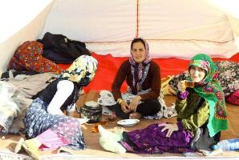

پذيرش > اخبار > گزارش زیبای یک مادر، یک زن و یک خبرنگار از روزهای نازیبای زلزله زدگان


 گزارش زیبای یک مادر، یک زن و یک خبرنگار از روزهای نازیبای زلزله زدگان گزارش زیبای یک مادر، یک زن و یک خبرنگار از روزهای نازیبای زلزله زدگان
26 مرداد 1391 - - نسخه قابل چاپ
شبکه ایران زنان: «ساقی لقایی» از یک حادثه تلخ به این زاویه از روزهای نازیبای زلزله زدگان هم نگاه کرده است. در سراسر نوشته اش به وضوح دیده میشود که او پیش از خبرنگار بودن اینجا یک مادر است، یک زن که دغدغه های و شرم های زنان روستایی را می شناسد. حتما بخوانید ساده و صمیمی نوشته است:
این نوشتار به سبک گزارش های خبری از آب در نمی آید احتمالا. شاید مثل ِ سفرنامه بشود. سعی می کنم چیزی از دیده ها جا نیندازم.
بعد از ظهر شنبه با لرزش ِ موبایلم که روی ویبره بود از خواب پریدم. آن تماس دو خبر بد داشت: فوت عمه ام و زلزله در آذربایجان. گیج بودم و غمگین. چند ساعتی گذشت تا به خودم مسلط شوم. عمه، عمه ی تابستان های شادِ کودکی هایم رفته بود و آذربایجان ِ مهربان و بی دریغ کودکی هایم لرزیده بود و حالا معلوم نبود در کجا چه کسانی زیر آوار هستند. زیر ِ آوار آن دیوارهای کاهگلی ِ قطور و سقف های چوبی ِ فروریخته.
نیمه های شب در صفحه ی فیس بوکم کوتاه نوشتم "می روم آذربایجانم؛ آذربایجان ِ زخمی و گریانم". باید می رفتم! شروع کردم به جمع کردن وسایل ضروری سفر. خانواده ام در حال آماده شدن برای انتقال و خاکسپاری عمه بودند در آذربایجان. وسایل هر چهار نفرمان – خودم، همسر و دوقلوهایم – را جمع کردم در یک ساک کوچک که زیر پایم جا بشود، و صندوق ماشین را پر کردم از پتو و لباس و اسباب بازی. جایی برای نوار بهداشتی که از اول فکرم را مشغول کرده بود، نماند.
ظهر یکشنبه در پمپ بنزینی حوالی زنجان به اکیپی از امدادگران داوطلب برخورد کردیم که توقف کوتاهی داشتند برای تهیه ی سوخت و استفاده از سرویس بهداشتی. چهار ون پر از پتو و لباس بود. خواهش کردیم کمک های ما را هم همراهشان ببرند؛ پذیرفتند. باید صندوق ماشین را برای نواربهداشتی ها خالی می کردم. این جور وقتها به زنان و حیای نابودگری که همیشه همراهشان است فکر می کنم. این که در آن ویرانی ها بدون آب و وسایل بهداشتی چه خواهند کرد. به بیماری های احتمالی ای که دچارش می شوند و دم بر نمی آورند چون از نگاه ِ مادرانه شان همیشه چیزی هست که از خودشان مهمتر باشد.
کم کم تلفن ها شروع شد. دوستانی که استتوس فیس بوکم را دیده بودند زنگ می زدند و پیشنهاد کمک می کردند. تصمیم گرفتیم پولها را به حساب من واریز کنند و من در نزدیک ترین شهر برای زلزله زده ها خرید کنم. حوالی پنج بعد از ظهر هلال احمر بستان آباد بودیم. یک میلیون و سیصد هزار تومان پول جمع شده بود. امدادگرهای هلال احمر می گفتند آب! آب نیاز دارند مردم! و من تاکید داشتم که پول های امانتی را آن طور هزینه کنم که خواسته شده! باید نوار بهداشتی و لباس زیر زنانه می خریدم! پوشک و شیر خشک و سرلاک! شیشه شیر و پستانک!
برای خرید در داروخانه و لباس فروشی، وقتی فهمیدند برای زلزله زده هاست، آن قدر تخفیف دادند که پول برای آب هم بماند! سیصد هزار تومان هم ماند برای آب، که با راهنمایی امدادگرهای هلال احمر از کارخانه خریدیم و باز هم با تخفیف. در واقع کسی سود نمی گرفت. فقط قیمت تمام شده ی کالا! همکار دکتر داروساز، وقتی ما خرید می کردیم، گفت که از طرف او هم دویست هزار تومان سرلاک و شیرخشک بگذارند.
کالاها را آماده کردیم و انتقالش را به امدادگرهای هلال احمر بستان آباد سپردیم و رفتیم برای خداحافظی با عمه. خاکسپاری شبانگاه انجام شد. آذربایجانی ها رسم دارند که مرده روی زمین نماند ... و صبح راهی شدیم به سمت ِ مناطق زلزله زده.
اطلس جغرافیایی می گفت برای رفتن به سمت "هریس" لازم نیست از سراب به بستان آباد بروی. از "دوزدوزان" به سمت مهربان پیچیدیم و بعد به سمت هریس. می دانستم که شهر "هریس" خسارت زیادی ندیده؛ باید می رفتیم به روستاها. "کلوانق" و "بخشایش" ما را به "ورزقان" می رساند. رفتیم "کلوانق" و از آنجا "بخشایش". فکر کردیم شاید بعد از بخشایش جایی برای خرید کردن پیدا نکنیم. سوپرمارکت همه چیز داشت. غذای کنسروی، لوازم بهداشتی، مرغ و گوشت. یکی از مهندسان معدن "سونگون" که به همراه همکارانش ستادی مردمی تشکیل داده بودند، تلفنی گفت که کنسرو لازم دارند و غذای خشک. فروشنده ی سوپرمارکت اما چیزی به ما نفروخت! راهنمایی مان کرد به فروشگاه آفتاب که به نوعی ستاد پخش مواد غذایی و بهداشتی شده بود برای زلزله زده ها. دو وانت نیسان و یک سمند در حال بار زدن غذا و آب بودند. همراهشان شدیم. ششصد هزار تومان دیگر جمع شده بود، خرما و کمپوت و کنسرو و شکلات خریدیم و راه افتادیم به سمت روستاهای ویران شده. ویرانی ... ویرانی ... ویرانی ...
"گلدیر" و "سرند" تقریبا پنجاه درصد ویران شده بودند. چادرهای سفید هلال احمر نور امیدی بود که کمک ها رسیده است. گاه چند چادر کنار هم، گاه با فاصله از هم مردم را در خود اسکان داده بودند. مثل ساختار روستایی آذربایجان، هر کس انگار خیمه اش را در زمین خودش علم کرده بود. کنار هر ویرانه ای، چادری! تلخ بود، اما می شد امیدوار بود که فاجعه ی بم تکرار نشده است؛ این امید تا وقتی پا برجا بود که برسیم به "باجه باج".
کوه ریزش کرده بود و معلوم بود که جاده دست کم تا چند ساعت مسدود بوده است. بعضی جاها در سمت ِ مقابل ِ کوه جاده، سنگ ها را جمع کرده بودند. پاکسازی ِ جاده می توانست چند ساعتی طول کشیده باشد.
به "باجه باج" رسیدیم و اینجا انگار آغاز ِ مصیبت بود. روستا به کلی ویران شده بود. انگار خانه ها درسته فرو رفته بودند توی زمین و انباشته ی کاه که مرسوم است در مناطق روستایی آذربایجان بر بام خانه انبار می شود، مثل کلاهی بی سر، بر زمین گذاشته شده بودند. از لا به لای ویرانه ها ستونهای چوبی بیرون زده بود. ستون هایی که اسکلت خانه های کاهگلی ِ روستاهای آذربایجان هستند. موقع زلزله مردان اغلب در مزارع مشغول کار بوده اند و زنها و کودکان در بعد از ظهر ِ تشنه ی ماه رمضان در خانه. آوار اغلب بر سر زنان و کودکان فرو ریخته بود.
دورتر از آوارها نزدیک سرسبزی دره ها چادرها علم شده بودند و گروهی از روستاییان همچنان مبهوت در میان سفیدی ِ چادرها به بیرون نگاه می کردند. گروهی از مردم، مردان و زنان مُسن، با ترس و لرز میان ویرانه ها به دنبال بازمانده ی وسایلشان بودند. کودکانی روی تل ِ اثاثیه ی بیرون آمده از آوار نشسته بودند. امدادگرها، که اغلب مردم بودند، در حال پخش مواد غذایی، آب و پتو بودند. گاهی هم چند نیروی نظامی با اسلحه یا بدون اسلحه ایستاده بودند. نیروهای هلال احمر، داوطلب و کادری، چادرها را علم کرده بودند و هرچند خسته، اما جواب پرسش های امدادگرهای مردمی را می دادند و راهنمایی شان می کردند.
کودکان، کودکان ِ خسته و خاک آلود، چشم هایشان پر از ناامنی بود. نوشابه و خوراکی هایی که به دستشان رسیده بود، سفت چسبیده بودند. انگار زلزله بهانه ای بوده که فقر و دور نگه داشته شدگی ِ این مردم به چشم بیاید! به کودکی یک بسته چوب شور دادم. به ترکی گفت: این چیست؟ خوردنی ست؟ کودک ِ دیگری جوجه ای یافته بود در میان ویرانه ها، در ِ یک بطری آب معدنی را پر از آب کرده بود و به جوجه آب و دان می داد. بغلش کرده بود و نوازشش می کرد. ذات ِ این بچه های فقیر و مصیبت زده، بخشندگی ست. می توانی در آغوششان بگیری و گرم شوی.
حتی در اوج این ناامنی و بی پناهی شان.
اما از مناعت طبع این مردم بگویم ... زلزله زده باشی، دو روز مطلقا بدون آب و غذا مانده باشی، کودک باشی، و وقتی به تو غذا یا آب می دهند بگویی "بروید به روستای بعدی. به ما کمک کرده اند. اما آنها هنوز آب و غذا ندارند" ... یا مثلا با زنی، مردی روستایی هم کلام شوی، دلداری اش بدهی و از نیازهایش بپرسی و بگوید "شرمنده ایم که مهمان ما هستید و امکان پذیرایی نداریم" ... یا بگویی بچه هایی که والدینشان را از دست داده اند کجا هستند؟ و جواب بشنوی "اینجا بچه ای بی سرپرست نمی ماند. ما همه فامیل داریم و بچه هایی که والدینشان زخمی یا کشته شده اند نزد فامیل ها امن و آرام هستند" ...
از "باجه باج" به سمت ِ "چوبانلار" رفتیم. وضعش مثل روستای قبل بود. کمک ها رسیده بودند. چادرها علم شده بودند. مردم داشتند لا به لای ویرانه ها زندگی شان را می جستند. در آنجا کسی کشته نشده بود؛ تعدادی زخمی داشتند. و عجیب این که "باجه باج"ی ها که سی و شش کشته و دو مفقود داشتند می گفتند بروید "چوبانلار"! آنها کمک بیشتری نیاز دارند! حق داشتند! ویرانی زیاد بود، اما آن جاها هم که هنوز فرو نریخته بود، فرسوده و ویران بود.
آموزگاری را دیدم که چند سال پیش در این روستاها درس می داده؛ آمده بود سراغ دانش آموزانش را بگیرد. بچه ها با دیدن آقا معلم شاد شدند. در آغوشش آرام گرفتند. اما وقتی سراغ بعضی ها را می گرفت و نبودند، غمگین می شدند. کودکانه آه می کشیدند و می گفتند اکبر مرد. خدیجه هم مرد. مریم بیمارستان است. زهرا مرد ...
مردم این روستاها همچنان منتظر کمک هستند. نه تنها آب و غذا! آنها به ما دل بسته اند. به مردم دل بسته اند. لا به لای گفت و گوهای فارسی ِ امدادگران دنبال کلمه هایی آشنا هستند و امنیت می جویند. با یکی از امدادگران هلال احمر حرف می زدم. می گفت حضور مردم در اینجا دردی را دوا نمی کند. کار باید سازماندهی شده باشد. روستا باید به زودی بازسازی شود. این کار تک تک مردم نیست! باید نیروهای متخصص بیایند. تجربه ی زلزله ی بم را داشت و همسر زابلی اش هم در چادر کناری مشغول کار بود. می گفت باید فکری به حال زمستان اینها بکنیم! حضور هیجان زده ی مردم در اینجا ترافیک ایجاد می کند و ضمن این که هزینه و وقت زیادی می گذارند اما لطفشان موثر واقع نمی شود. مردم اینجا زبان فارسی بلد نیستند. نمی توانند با کمک کننده ها ارتباط برقرار کنند. کسی می تواند اینجا موثر باشد که یا مددکار ترک زبان باشد یا متخصص بازسازی روستا. بعد به زلزله زده ای که کنجکاوانه به حرفهای ما گوش می داد، به ترکی گفت: از حرفهای ما چه فهمیدی؟ به چی گوش می کردی؟ مرد ِ خاک آلود ِ مستاصل جواب داد: اسکان! درباره ی اسکان حرف می زدید! و پیرزنی که انگار با ناجی زندگی اش رو به رو شده بود گفت: خانه های ما را کی می سازید؟ یعنی تا زمستان می توانیم در خانه زندگی کنیم؟
و تو فرو می ریختی، وقتی می شنیدی از مسکن مهر آمده اند و بعد از دلجویی گفته اند ما توان ساخت دوباره ی روستا را نداریم! یا فکر کن بخواهند از آن آپارتمان های بدقواره و ناامن بسازند برای مردمی که در کلبه های دنج کوهستانی در پهنه ی بی دریغ طبیعت کودکی کرده اند، بزرگ شده اند، بچه دار شده اند و پیر شده اند.
مردم روستاهای زلزله زده ی آذربایجان کمی امنیت می خواهند و خانه های بازسازی شده ی بی آلایش ِ خودشان را. بازسازی چند روستا کار سختی نیست، اگر فقط کمی کمک هایمان سازماندهی شده تر باشد.
غروب بود و داشتم روستاهایی را که بعد از گذشت سه روز چهار بار زیر پاهای من لرزیدند ترک می کردم. جاده های چاک خورده از زمین لرزه اما همچنان داشتند کمک های مردمی فراوانی را به روستاها می رساندند. مردم سنگ تمام گذاشته اند، دستمریزاد! از دور و نزدیک تریلی و کامیون و وانت بود که داشت برایشان کمک می برد. زوجی روی سقف رنوی کوچکشان آب معدنی گذاشته بودند و می بردند. در عین حال وانت هایی پر از آب معدنی بود که داشت از "چوبانلار" و "باجه باج" بر می گشت. شاید می رفت به سمت "جیغه"، روستای ویران شده ای دیگر در حوالی اهر.
داشتم بر می گشتم تهران و به روستاهایی بازسازی شده فکر می کردم که تابستان بعد می توانستند میزبان من و تو باشند با آغوشی باز و مهربان. آن زن ِ میانسال ِ مهربان می تواند جایگزین عمه ی درگذشته ام باشد. می شود دوباره این روستاها را ساخت و به جای بغض کردن در حین نوشتن یا خواندن این سفرنامه، سال بعد سفرنامه ای دیگرگون نوشت.
ارسال به
بالاترین
،
توییتر
،
فریندفید
،
فیسبوک
در همين بخش :
 پروین ذبیحی برنده جایزه حقوق بشری سازمان غيردولتى اتريشى سودويند شد پروین ذبیحی برنده جایزه حقوق بشری سازمان غيردولتى اتريشى سودويند شد
پخش کارت پستال و بروشور در روز جهانی زن در تهران
تمدید زمان برای امضای بیانیهی جمعی از فعالان زن به مناسبت هشت مارس
مجوزی که در نطفه خفه شد
بیش از 2000 امضا در اعتراض به تبعیض های آموزشی به مجلس تحویل داده شد
ديگر بخش ها :
طرح یک میلیون امضا
|
مقالات
|
سایت نوشته ها
|
اخبار
|
گزارش كمپين
|
گفت و گو
|
علیه سکوت
|
كوچه به كوچه
|
نامه های شما
|
گزارش ویژه
|
گفتگو با اعضا
|
ویژه سالگرد کمپین
|
تصویر برابری
|
دل آرام علی
|
تریبون
|
مقالات
|
تاریخ شفاهی
|
خارج از چارچوب
|
کتابخانه
|
درباره کمپین
|
کمپین در شهرها
|
کمپین در بند
|
صدای تغییر
|
ویژه 22 خرداد
|
لایحه حمایت از خانواده
|
گالری
|
عشا مومنی
|
امیر یعقوبعلی
|
خدیجه مقدم
|
راحله عسگری زاده و نسیم خسروی
|
پروین اردلان،جلوه جواهری، مریم حسین خواه، ناهید کشاورز
|
زینب پیغمبرزاده
|
سعیده امین، سارا ایمانیان، محبوبه حسین زاده، ناهید کشاورز و همایون نامی
|
احترام شادفر
|
نسیم سرابندی زاده،فاطمه دهدشتی
|
وبلاگ مهمان
|
پرونده خرم آباد
|
دستگیری ها
|
مریم مالک
|
پرستو اللهیاری
|
مهرنوش اعتمادی
|
سمیه رشیدی
|
Other Languages
|
همراهان
|
«فراخوان کمپین ده روز با بهاره هدایت»
| English
|